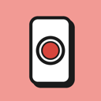

PlainRec privacy policy
This policy covers the PlainRec Android app (“PlainRec”), a screen recorder that records your phone's screen, with sound if you choose, and saves the video on your phone. In short: PlainRec does not collect, sell or share any data. It has no account, no ads, no analytics and no tracking. The app does not have permission to use the internet.
Information the app handles
- What is shown on your screen while you record, after you allow screen capture in Android's own prompt (asked every time you start).
- Sound, if you turn it on: the phone's own sound (games, videos) and/or the microphone, only while a recording runs or while you use the microphone test.
- The videos PlainRec saves for you (in Movies/PlainRec on your phone), and a list of them (name, length, size, date, whether sound was recorded), plus your settings.
All recording, encoding, trimming and saving happens on your phone. Your recordings, the sound and the list are never sent to the developer or anyone else.
Permissions
- Microphone (RECORD_AUDIO): to record your voice and, on Android 10 and later, the phone's own sound. Asked only when a sound option is on. Without it, PlainRec records the picture only.
- Notifications: to show the recording notification with Pause, Resume and Stop.
- Foreground service (screen capture and microphone types): so the recording keeps running while you use other apps.
PlainRec asks for no storage, camera, location or contacts permission. Videos are added to your gallery through Android's media store, which needs no permission on Android 10 and later.
Sharing
Videos leave your phone only when you choose to share them, and only to the app you pick.
Storage and deletion
Unfinished parts of a recording are kept in the app's private storage until the recording is saved or you discard it. Deleting a recording in the app removes it from your gallery. Uninstalling the app removes its private data (saved videos stay in your gallery). Since we never receive your data, there is nothing for us to delete on our side.
What we don't do
- We don't collect personal or sensitive information.
- We don't sell or transfer user data to third parties.
- We don't show ads or use advertising IDs.
- We don't use analytics or crash-reporting services.
- We don't record calls.
Children
The app is not directed at children under 13 and does not knowingly collect information from anyone.
Changes
If this policy changes, the updated version will be posted on this page with a new date.
Contact
Questions or requests: open an issue on GitHub.